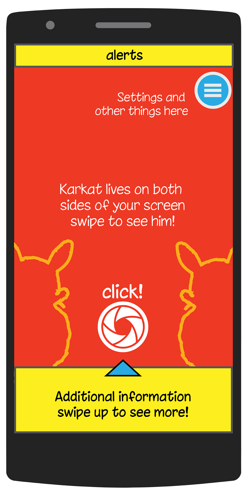
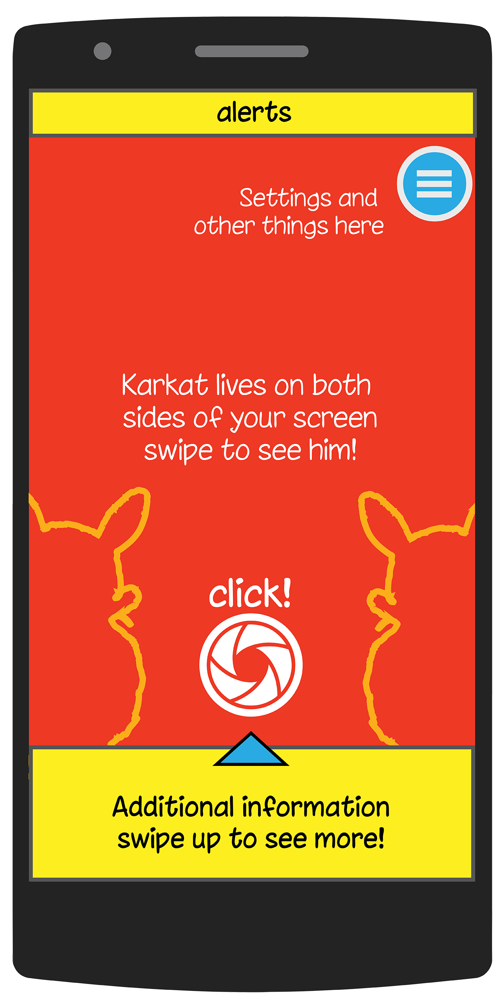

Karkat
2016
Classroom project at NID, Bangalore
Gamifying the experience of trash collection and identification for the Swachh Bharat Mission
poster
process
The Brief
This project was a classroom project at NID Bangalore. The module titled "Instructional Graphics" was an exercise in understanding screen design for mobile devices. The chosen theme was the Swachh Bharat Mission.
At this very time, we had a workshop with a team from Blippar who were showing off their computer vision capabilities (an image recognition algorithm that could identify most everyday use items). To put it in context, this is around the same time when Google Lens was first announced in the new iteration of Android.
Core Idea
Put the learnings from the Blippar workshop together with my inordinate consumption of AI and computer vision (aside, I'd just discovered YOLO and was consuming way too many Two Minute Papers) and badummtss! the little monkeys inside my head went into a tizzy. I was convinced there was some merit in using such an algorithm to detect and classify the different kinds of waste that accumulates in our cities. The kind of data that would be useful to the Swachh Bharat Mission if they could get their hands on it. The real problem, however was going to be to get people to scan waste in the first place.
Finding a Precedent
So I went around looking for ways other people had tackled this problem. And landed on an unlikely solution in a little unknown figure called Jhaduman. The genius of Jhaduman is in his ability to pop up on Mumbai's walls as an omniscient deity of the clean folk reminding them of their duties. I loved this solution for its awesome simplicity to engage an audience in their cityscape. I hate authority figures trying to tell us to clean our cities, but I 'd take advice from a cheeky cartoon for sure.
With the idea of finding an alternate character that could help me with my particularly vexing problem, I started sketching a bunch of options. Mostly anthropomorphised animals that I could pair with the waste management problem in my head.
That's when I found Karkat
Jhaduman
Karkat
Karkat started out as a bunch of lazy ovals, sketching out of restlessness on the Surface. Once I found a nice rhythm, Karkat began to emerge on screen. I thought of all the weeks of anatomy studies in the Foundation Course during the first semester at NID and kept at it. Soon he had a pair of human-like arms and some rat feet. Karkat was now fully formed in my head.
Wait. I didn't explain the name. That came from looking at the way we name creepy-crawlies in India. Most of them have a harsh 'kk' or 'kh' sound. Think about it. That set me off on finding a word that had a couple of those clicky 'k' sounds. From my childhood, I remembered how a lot of the northern languages would some variation on the hyphenated 'kooda-karkat'. So, now my character had a name and a (sort of?) form. Now he needed to be able to move. I quickly figured out how to make a puppet out of Karkat to see how he would move.
Great! we have a name, a face, a typeface (forgot to mention that) and some understanding of how he'd behave. That, ladies and gentlemen, is the story of how Karkat went from being a character to a personality in my head.

evolution of Karkat


How do I get this on a mobile phone?
So, the objective here was to demonstrate a basic interaction on the application. Being a little short on time, I did not animate the assets like I'd intended and drew up some static low fidelity screen mockups in Photoshop. These were sufficient for explaining the basic scenario of how the gamified interaction works and its reward mechanism. I thought that would a good fit for my target users. Crap, I forgot to tell you all about those. Here's a small card that sums up most of it:
Target Users
Since we were targetting the upward mobile urban citizen, the app had to be something that would reward repeat logins and be socially engaging. A quick look around the internet for any direction of finding such a group led me to the Internet Trends Report of 2016. The report talked about a growing user base driven largely by the proliferation of cheap mobile phones in the country. A couple of quick searches later, my gut feeling was appeased when I figured that most of these new users were mostly teenaged or twenty-somethings with a small percentage of the older sections of the population.
These were mostly people my age and some younger who I'd seen grow up to cable cartoons and Chacha Chaudhary comics. Comics from that generation became the inspiration for the way that Karkat acts and behaves in still frames on a phone screen.

I made this pretty collage of some of the comics I remember as a kid and also some new ones that I did not know, like who knew Bahubali was a comic now?
The Yet Incomplete App
I made a bunch of screens with some garishly saturated colours and found this typeface called China Cat to work with the comic style feel of the interface. That's that.
Yes, I know the camera shutter icon is fugly.
 
